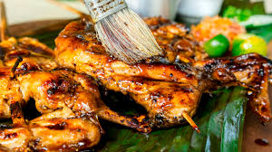

Chicken Inasal

Get ready to make all sorts of friends when you bring a big bowl of this Asian chicken noodle salad to the next big cookout. The only folks you might scare away are the ones who brought regular pasta salads. There's just something delightfully addictive about this special combination of cold and spicy. This recipe is the perfect catchall for all those summer vegetables we're supposed to be eating more of, as well as any dry leftover chicken you have around.
Ingredients
1⁄2 kg chicken, cut into serving pcs.
2 stalks lemongrass (tanglad), pounded and sliced 4 tbsp brown sugar
1/4 cup annatto (achuete) oil
1 pc Knorr Chicken Cube, mashed
Steps
It is true that the simplest of dishes are the most delicious. For example, we have this Chicken Inasal recipe which can be made with only 2 steps. Place the chicken pieces in a food grade plastic container along with the cane vinegar, garlic, ginger, lemongrass, sugar, anatto oil, and Knorr Chicken Cube. Mix this well and leave in the chiller to develop the flavours overnight.
This Inasal recipe is not only easy to make but it is also flexible. You have the option of grilling this over hot coal or pan-frying it over stove top while basting it in its own sauce.
Make your family’s hearts sing and smile when you cook this no fuss Chicken Inasal meal at the comfort of your own home.